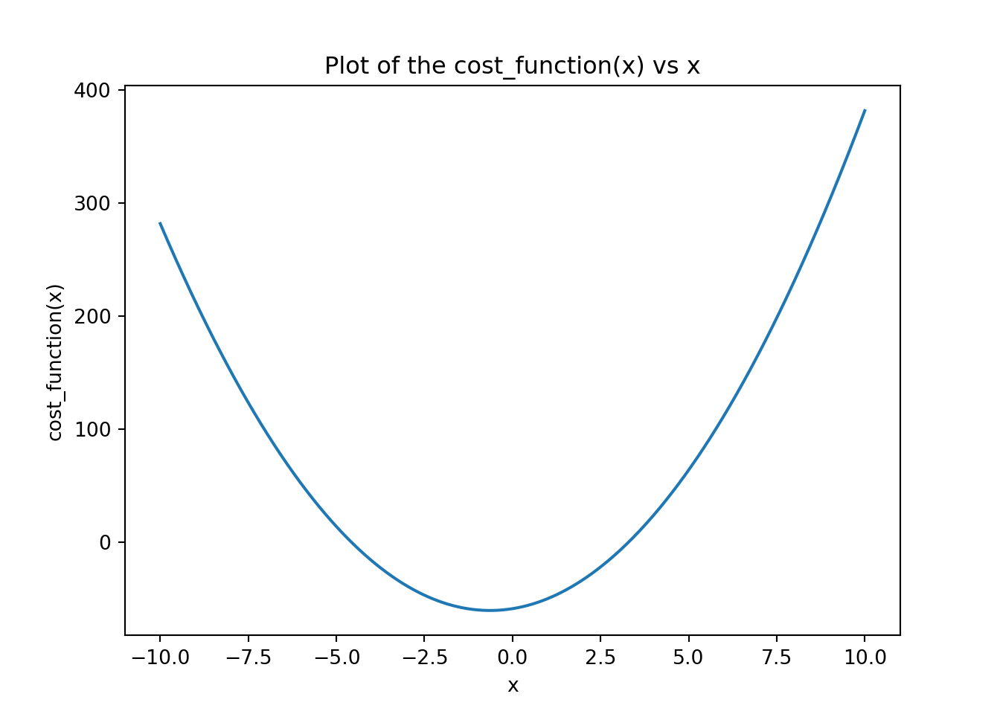
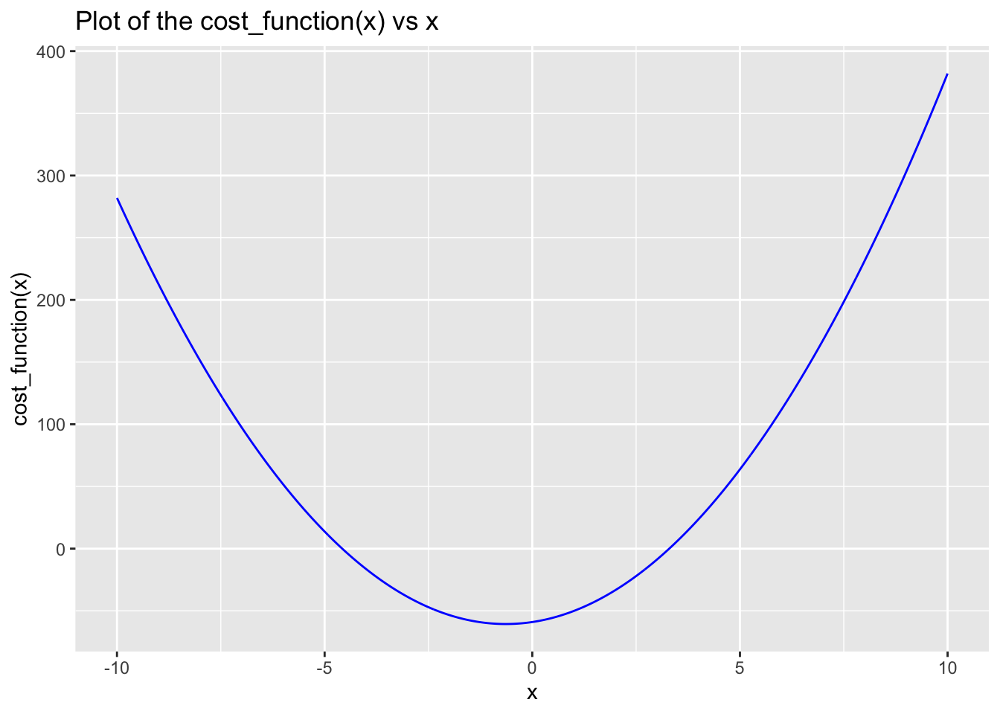

Gradient Descent is an optimization technique used in many Machine Learning algorithms to find the minimum of a function. It does require a convex and differentiable function to ensure we have a minimum. At its core it’s like searching for the lowest valley in a hilly landscape. The idea is to take small steps in the steepest downhill direction until you reach the lowest point.
Gradient Descent is used to find the parameters of the cost function. Think the parameters in the linear regression for instance.
Basic Gradient Descent
One of the main disadvantage of gradient descent is getting stuck to a local minimum or a saddle point and not finding the global minimum.
To perform a gradient descent, we need
a function
its derivative
a starting point (where do we start going down)
the size of a step (aka learning rate)
the number of iterations (aka how many steps do we intend to take)
optionally, we can set a threshold for when we stop the iterative process of going down the hill.
import numpy as npimport matplotlib.pyplot as plt# the original function def cost_function(x): return(3.91*x**2+5*x -59)# the derivative of our function def gradient(x): return(3.91*x+5)# checking our functioncost_function(4.5)
42.67750000000001
# quick visual check x = np.linspace(-10, 10, 1000)y = cost_function(x)plt.clf()plt.plot(x, y)plt.xlabel('x')plt.ylabel('cost_function(x)')plt.title('Plot of the cost_function(x) vs x')plt.show()

library(dplyr)library(purrr)library(ggplot2)# the original function cost_function <-function(x){return(3.91*x^2+5*x -59)}gradient <-function(x) {return(3.91*x+5)}# checking our functioncost_function(4.5)
[1] 42.6775
# quick visual check df <-tibble(x =seq(from =-10, to =10, length.out =1000)) |>mutate(y =map_dbl(x, cost_function))ggplot(df, aes(x, y)) +geom_line(color ='blue') +#xlab('x') + ylab('cost_function(x)') + labs(x ='x', y ='cost_function(x)', title ='Plot of the cost_function(x) vs x')

We can now put everything together and define our gradient descent function.
def gradient_descent(f, deriv, start, learning_rate, n_iter): x = startfor i inrange(n_iter): grad = gradient(x)# we now update x x = x - learning_rate * grad print(f"Minimum value of x: {x:.2f}")print(f"Minimum value for our Cost function: {cost_function(x):.3f}")gradient_descent(cost_function, gradient, 15, 0.01, 10000)
Minimum value of x: -1.28
Minimum value for our Cost function: -59.000
We could change slightly our code to store the iterations for visualization or analysis.
def gradient_descent(f, deriv, start, learning_rate, n_iter): x = start# initialize a list to store values cost_values = []for i inrange(n_iter): cost = cost_function(x) grad = gradient(x)# update of x x = x - learning_rate * grad# append the value of cost to the list cost_values.append(cost)# print the progressif i %10==0and i <200: print(f"Iteration {i}: x = {x:.4f}, cost = {cost:.4f}")gradient_descent(cost_function, gradient, start = np.random.randn(), learning_rate =0.01, n_iter =1000)
Iteration 0: x = 1.2439, cost = -45.1770
Iteration 10: x = 0.4142, cost = -55.6721
Iteration 20: x = -0.1426, cost = -59.4457
Iteration 30: x = -0.5163, cost = -60.5056
Iteration 40: x = -0.7671, cost = -60.5538
Iteration 50: x = -0.9354, cost = -60.2875
Iteration 60: x = -1.0483, cost = -59.9742
Iteration 70: x = -1.1241, cost = -59.7034
Iteration 80: x = -1.1750, cost = -59.4944
Iteration 90: x = -1.2091, cost = -59.3419
Iteration 100: x = -1.2320, cost = -59.2340
Iteration 110: x = -1.2474, cost = -59.1590
Iteration 120: x = -1.2577, cost = -59.1077
Iteration 130: x = -1.2646, cost = -59.0727
Iteration 140: x = -1.2693, cost = -59.0489
Iteration 150: x = -1.2724, cost = -59.0329
Iteration 160: x = -1.2745, cost = -59.0221
Iteration 170: x = -1.2759, cost = -59.0149
Iteration 180: x = -1.2768, cost = -59.0100
Iteration 190: x = -1.2775, cost = -59.0067
We could visualize how the process happen. We’ll return the cost_values list for that to our function.
# the original function def cost_function(x): return(0.91*x**2+5*x -59)# the derivative of our function def gradient(x): return(0.91*x+5)def gradient_descent(f, deriv, start, learning_rate, n_iter): x = start cost_values = [] x_list = [start]for i inrange(n_iter): cost = cost_function(x) grad = gradient(x) x = x - learning_rate * grad cost_values.append(cost) x_list.append(x)print("Iteration {}: x = {}, cost = {}".format(i, x, cost))return(x_list)x_list = gradient_descent(cost_function, gradient, start =7, learning_rate =0.3, n_iter =5)
Iteration 0: x = 3.589, cost = 20.590000000000003
Iteration 1: x = 1.109203, cost = -29.33336189
Iteration 2: x = -0.693609419, cost = -52.33438352135981
Iteration 3: x = -2.004254047613, cost = -62.03025153122578
Iteration 4: x = -2.9570926926146512, cost = -65.36576903655549